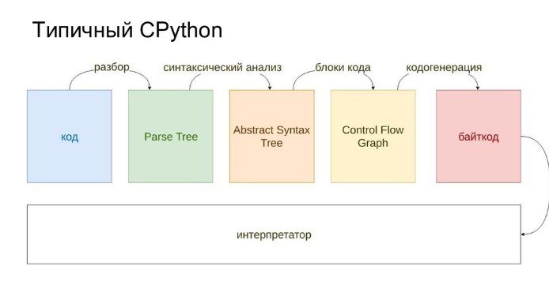
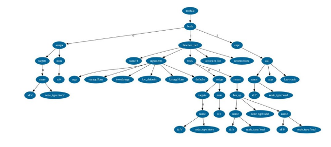
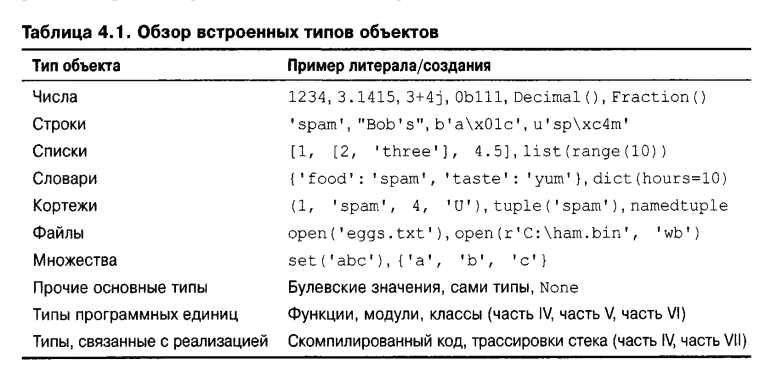
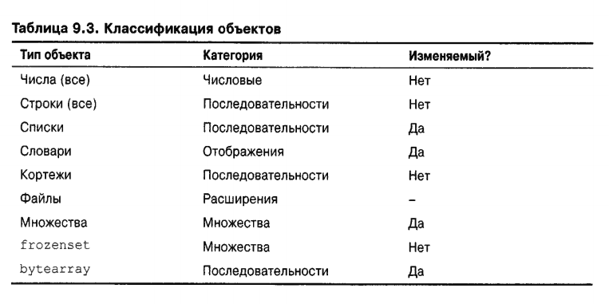
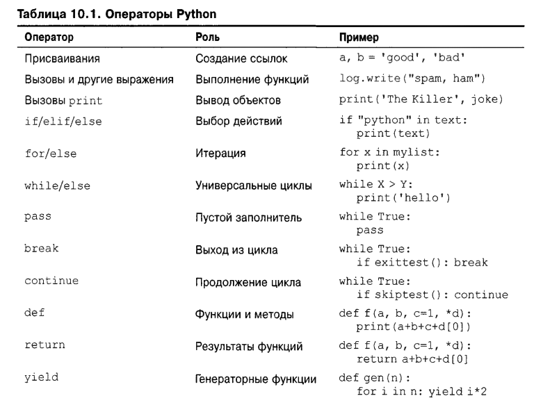
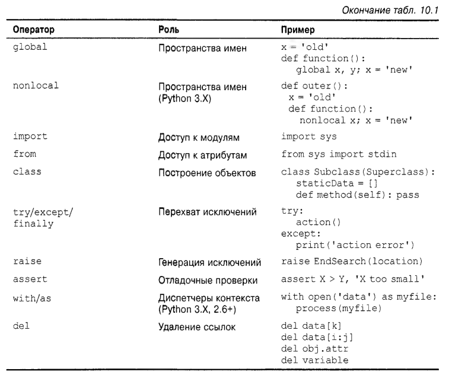

{kind=link}
{kind=link}
после того, как объект создан, он навсегда привязывается к своему набору операций; на строке можно выполнять только строковые операции, а на списке — только списковые операции. Формально это означает, что язык Python динамически типизирован — модель, которая отслеживает типы автоматически, не требуя объявления, но он также строго типизирован — ограничение, обусловливающее возможность выполнения на объекте только допустимых для его типа операций
Python
Административное
Напоминаю
курс провожу первый раз
все сыровато)))
смело предлагайте свои!
При изучении
Сохранять интерес
Не сдаваться в плен фрустрации
Максимально конкретные примеры
Желательно близкие
Немного про компьютеры


Assembler
#include <stdio.h>
int main(void)
{
int a = 3;
int b = 4;
int x = a + b;
printf("%d\n", x);
} | |
Введение
Особенности
популярный
высокоуровневый
интерпретируемый
общего назначения
динамически и строго типизированный
со сборщиком мусора (garbage collector)
объектно-ориентированный
с элементами функционального программирования
опенсорс
"batteries included"
история
|
|
"I remembered all my experience and some of my frustration with ABC. I decided to try to design a simple scripting language that possessed some of ABC’s better properties, but without its problems. So I started typing. I created a simple virtual machine, a simple parser, and a simple runtime. I made my own version of the various ABC parts that I liked. I created a basic syntax, used indentation for statement grouping instead of curly braces or begin-end blocks, and developed a small number of powerful data types: a hash table (or dictionary, as we call it), a list, strings, and numbers."
развитие
Python Enhancement Proposals (PEP)
1991: 0.9.0 alt.sources
1994: 1.0
2000: 2.0
2008: 3.0 (Py3k, 3000)
…
2016: 3.6
2018: 3.7
On July 12, 2018, Guido van Rossum stepped down as leader
2019: 3.8 (бета-версия)
2020: прекращается поддержка 2.7 https://en.wikipedia.org/wiki/History_of_Python
2 vs 3
различия между 2 и 3
различия между разными версиями 3
def greet(name):
print "Hello, {0}!".format(name)
print "What's your name?"
name = raw_input()
greet(name)$ 2to3 example.pydef greet(name):
print("Hello, {0}!".format(name))
print("What's your name?")
name = input()
greet(name)syntax vs semantics
the syntax of a computer language is the set of rules that defines the combinations of symbols that are considered to be a correctly structured document or fragment in that language
The syntax of a language defines its surface form. Text-based computer languages are based on sequences of characters
syntax errors
синтаксис определяет правильную форму программы
семантика и ошибки
formal verification
In the context of hardware and software systems, formal verification is the act of proving or disproving the correctness of intended algorithms underlying a system with respect to a certain formal specification or property, using formal methods of mathematics.
Formal verification can be helpful in proving the correctness of systems such as: cryptographic protocols, combinational circuits, digital circuits with internal memory, and software expressed as source code. https://en.wikipedia.org/wiki/Formal_verification
Automatic bug-fixing
Automatic bug-fixing is the automatic repair of software bugs without the intervention of a human programmer. It is also commonly referred to as automatic patch generation, automatic bug repair, or automatic program repair

Bug
Грамматика в одном файле
# Grammar for Python
# NOTE WELL: You should also follow all the steps listed at
# https://devguide.python.org/grammar/
# Start symbols for the grammar:
# single_input is a single interactive statement;
# file_input is a module or sequence of commands read from an input file;
# eval_input is the input for the eval() functions.
# NB: compound_stmt in single_input is followed by extra NEWLINE!
single_input: NEWLINE | simple_stmt | compound_stmt NEWLINE
file_input: (NEWLINE | stmt)* ENDMARKER
eval_input: testlist NEWLINE* ENDMARKER
decorator: '@' dotted_name [ '(' [arglist] ')' ] NEWLINE
decorators: decorator+
decorated: decorators (classdef | funcdef | async_funcdef)
async_funcdef: 'async' funcdef
funcdef: 'def' NAME parameters ['->' test] ':' suite
parameters: '(' [typedargslist] ')'
typedargslist: (tfpdef ['=' test] (',' tfpdef ['=' test])* [',' [
'*' [tfpdef] (',' tfpdef ['=' test])* [',' ['**' tfpdef [',']]]
| '**' tfpdef [',']]]
| '*' [tfpdef] (',' tfpdef ['=' test])* [',' ['**' tfpdef [',']]]
| '**' tfpdef [','])
tfpdef: NAME [':' test]
varargslist: (vfpdef ['=' test] (',' vfpdef ['=' test])* [',' [
'*' [vfpdef] (',' vfpdef ['=' test])* [',' ['**' vfpdef [',']]]
| '**' vfpdef [',']]]
| '*' [vfpdef] (',' vfpdef ['=' test])* [',' ['**' vfpdef [',']]]
| '**' vfpdef [',']
)
vfpdef: NAME
stmt: simple_stmt | compound_stmt
simple_stmt: small_stmt (';' small_stmt)* [';'] NEWLINE
small_stmt: (expr_stmt | del_stmt | pass_stmt | flow_stmt |
import_stmt | global_stmt | nonlocal_stmt | assert_stmt)
expr_stmt: testlist_star_expr (annassign | augassign (yield_expr|testlist) |
('=' (yield_expr|testlist_star_expr))*)
annassign: ':' test ['=' test]
testlist_star_expr: (test|star_expr) (',' (test|star_expr))* [',']
augassign: ('+=' | '-=' | '*=' | '@=' | '/=' | '%=' | '&=' | '|=' | '^=' |
'<<=' | '>>=' | '**=' | '//=')
# For normal and annotated assignments, additional restrictions enforced by the interpreter
del_stmt: 'del' exprlist
pass_stmt: 'pass'
flow_stmt: break_stmt | continue_stmt | return_stmt | raise_stmt | yield_stmt
break_stmt: 'break'
continue_stmt: 'continue'
return_stmt: 'return' [testlist]
yield_stmt: yield_expr
raise_stmt: 'raise' [test ['from' test]]
import_stmt: import_name | import_from
import_name: 'import' dotted_as_names
# note below: the ('.' | '...') is necessary because '...' is tokenized as ELLIPSIS
import_from: ('from' (('.' | '...')* dotted_name | ('.' | '...')+)
'import' ('*' | '(' import_as_names ')' | import_as_names))
import_as_name: NAME ['as' NAME]
dotted_as_name: dotted_name ['as' NAME]
import_as_names: import_as_name (',' import_as_name)* [',']
dotted_as_names: dotted_as_name (',' dotted_as_name)*
dotted_name: NAME ('.' NAME)*
global_stmt: 'global' NAME (',' NAME)*
nonlocal_stmt: 'nonlocal' NAME (',' NAME)*
assert_stmt: 'assert' test [',' test]
compound_stmt: if_stmt | while_stmt | for_stmt | try_stmt | with_stmt | funcdef | classdef | decorated | async_stmt
async_stmt: 'async' (funcdef | with_stmt | for_stmt)
if_stmt: 'if' test ':' suite ('elif' test ':' suite)* ['else' ':' suite]
while_stmt: 'while' test ':' suite ['else' ':' suite]
for_stmt: 'for' exprlist 'in' testlist ':' suite ['else' ':' suite]
try_stmt: ('try' ':' suite
((except_clause ':' suite)+
['else' ':' suite]
['finally' ':' suite] |
'finally' ':' suite))
with_stmt: 'with' with_item (',' with_item)* ':' suite
with_item: test ['as' expr]
# NB compile.c makes sure that the default except clause is last
except_clause: 'except' [test ['as' NAME]]
suite: simple_stmt | NEWLINE INDENT stmt+ DEDENT
test: or_test ['if' or_test 'else' test] | lambdef
test_nocond: or_test | lambdef_nocond
lambdef: 'lambda' [varargslist] ':' test
lambdef_nocond: 'lambda' [varargslist] ':' test_nocond
or_test: and_test ('or' and_test)*
and_test: not_test ('and' not_test)*
not_test: 'not' not_test | comparison
comparison: expr (comp_op expr)*
# <> isn't actually a valid comparison operator in Python. It's here for the
# sake of a __future__ import described in PEP 401 (which really works :-)
comp_op: '<'|'>'|'=='|'>='|'<='|'<>'|'!='|'in'|'not' 'in'|'is'|'is' 'not'
star_expr: '*' expr
expr: xor_expr ('|' xor_expr)*
xor_expr: and_expr ('^' and_expr)*
and_expr: shift_expr ('&' shift_expr)*
shift_expr: arith_expr (('<<'|'>>') arith_expr)*
arith_expr: term (('+'|'-') term)*
term: factor (('*'|'@'|'/'|'%'|'//') factor)*
factor: ('+'|'-'|'~') factor | power
power: atom_expr ['**' factor]
atom_expr: ['await'] atom trailer*
atom: ('(' [yield_expr|testlist_comp] ')' |
'[' [testlist_comp] ']' |
'{' [dictorsetmaker] '}' |
NAME | NUMBER | STRING+ | '...' | 'None' | 'True' | 'False')
testlist_comp: (test|star_expr) ( comp_for | (',' (test|star_expr))* [','] )
trailer: '(' [arglist] ')' | '[' subscriptlist ']' | '.' NAME
subscriptlist: subscript (',' subscript)* [',']
subscript: test | [test] ':' [test] [sliceop]
sliceop: ':' [test]
exprlist: (expr|star_expr) (',' (expr|star_expr))* [',']
testlist: test (',' test)* [',']
dictorsetmaker: ( ((test ':' test | '**' expr)
(comp_for | (',' (test ':' test | '**' expr))* [','])) |
((test | star_expr)
(comp_for | (',' (test | star_expr))* [','])) )
classdef: 'class' NAME ['(' [arglist] ')'] ':' suite
arglist: argument (',' argument)* [',']
# The reason that keywords are test nodes instead of NAME is that using NAME
# results in an ambiguity. ast.c makes sure it's a NAME.
# "test '=' test" is really "keyword '=' test", but we have no such token.
# These need to be in a single rule to avoid grammar that is ambiguous
# to our LL(1) parser. Even though 'test' includes '*expr' in star_expr,
# we explicitly match '*' here, too, to give it proper precedence.
# Illegal combinations and orderings are blocked in ast.c:
# multiple (test comp_for) arguments are blocked; keyword unpackings
# that precede iterable unpackings are blocked; etc.
argument: ( test [comp_for] |
test '=' test |
'**' test |
'*' test )
comp_iter: comp_for | comp_if
sync_comp_for: 'for' exprlist 'in' or_test [comp_iter]
comp_for: ['async'] sync_comp_for
comp_if: 'if' test_nocond [comp_iter]
# not used in grammar, but may appear in "node" passed from Parser to Compiler
encoding_decl: NAME
yield_expr: 'yield' [yield_arg]
yield_arg: 'from' test | testlist
разные имплементации
CPython is the reference implementation of Python. It is written in C, meeting the C89 standard with several select C99 features
PyPy is a fast, compliant[112] interpreter of Python 2.7 and 3.5. Its just-in-time compiler brings a significant speed improvement over CPython.
MicroPython and CircuitPython are Python 3 variants optimized for microcontrollers. This includes Lego Mindstorms EV3.
RustPython is a Python 3 interpreter written in Rust
Интерпретация
|
Интерпретация

Байткод
Bytecode, also termed portable code or p-code, is a form of instruction set designed for efficient execution by a software interpreter. Unlike human-readable source code, bytecodes are compact numeric codes, constants, and references (normally numeric addresses) that encode the result of compiler parsing and performing semantic analysis of things like type, scope, and nesting depths of program objects.
| |
AST

code as data
Python Virtual Machine

Кросс-компиляторы
Jython
IronPython
RPython
Pyjs (Pyjamas)
Cython compiles Python to C and C++
Numba uses LLVM to compile Python to machine code.
Синтаксис
Объектная модель
данные представлены в виде объекты
либо встроенные объекты, либо, которые мы создаем с применением классов Python или внешних языковых инструментов, таких как библиотеки расширений С.
объекты представляют собой порции памяти со значениями и наборами связанных операций
в Python абсолютно все является объектами
почему
Если вы имели дело с языком более низкого уровня наподобие С или C++, то знаете, что большая часть работы сконцентрирована на реализации обзехшо#, также известных, как структуры данных, для представления компонентов в вашей предметной области. Вам нужно планировать структуры в памяти, управлять выделением памяти, создавать процедуры поиска и доступа и т.д. Такие рутинные задачи утомительны (и чреваты ошибками) и они зачастую отвлекают от истинных целей программы
— Лутц
Встроеные объекты:
облегчают написание программ.
являются компонентами расширений
часто эффективнее специальных структур данных
представляют собой стандартную часть языка.
являются более мощными и эффективными, чем большинство того, что можно создать с нуля.

особенности
программные единицы — функции, модули и классы — объекты.
Они создаются посредством операторов и выражений вроде def, class, import и lambda
могут свободно передаваться между сценариями, храниться внутри других объектов и т.д.
"набор типов, связанных с реализацией, таких как объекты скомпилированного кода, которые обычно представляют больший интерес для создателей инструментов, чем для разработчиков приложений;"
основные типы (built-ins)
Основными типами данных — фактически встроены в язык — для генерации большинства из них имеется специфический синтаксис выражений. Например, 'python' — т.н. литеральное выражение (литерал), которое генерирует и возвращает новый объект строки. Т.е. есть специальный синтаксис. Для словаря, списка — аналогично есть специальный синтаксис
динамическая типизация
Числа
создание
операции
Переменные
ярлыки
строки
создание
операции
строка — это последовательность
строка — неизменяемый
списки
последовательность
изменяемый
создание
операции
бесконечная вложенность
list comprehension
словари
отображение (map)
изменяемый
создание
операции
бесконечная вложенность
dict comprehension
bool
True/False
None
кортежи
последовательность
неизменяемые
создание
операции
файлы
создание
операции
бинарные или текстовые
eval, pickle
коллекции
immutable vs mutable
итерируемые vs неитерируемые

Класс объекты
type
type(type)
иерархия

проверка типов
полиморфизм
Выполняя проверку на предмет специфического типа в своем коде, вы фактически нарушаете гибкость кода — ограничиваете его работой только с одним типом. Без такой проверки код может быть способен работать с целым диапазоном типов. Все связано с упоминаемой ранее идеей полиморфизма и уходит своими корнями в отсутствие в Python объявлений типов. Как вы узнаете, в Python мы имеем дело с интерфейсами объектов (поддерживаемыми операциями), а не с типами. Другими словами нас заботит, что объект делает, а не чем он является.
полиморфизм — вероятно, ключевая идея правильного использования Python
— Лутц
duck typing
"If it walks like a duck and it quacks like a duck, then it must be a duck"

Свой класс
Объектно-ориентированное программирование на Python — необязательное, но мощное средство языка, которое сокращает время разработки за счет поддержки программирования через настройку. В общих понятиях классы определяют новые типы объектов, которые расширяют основной набор.
— Лутц
Другие классы
Остальные типы в Python будут либо объектами, связанными с выполнением программ (наподобие функций, модулей, классов и скомпилированного кода), которые мы исследуем позже, либо реализуются функциями импортированных модулей, а не синтаксисом языка. Последние также имеют тенденцию исполнять роли, специфичные для приложения — образцы текста, интерфейсы к базам данных, сетевые подключения и т.д
— Лутц
Иерархия кода
программы Python могут быть разложены на модули, операторы, выражения и объекты, как описано ниже.
1. Программы состоят из модулей.
2. Модули содержат операторы.
3. Операторы содержат выражения.
4. Выражения создают и обрабатывают объекты.— Лутц
Операторы

Операторы

Отступы
Строка заголовка:
Вложенный блок операторовcontrol structures
if

while

интерактивные пример с while True
вложенные циклы
for